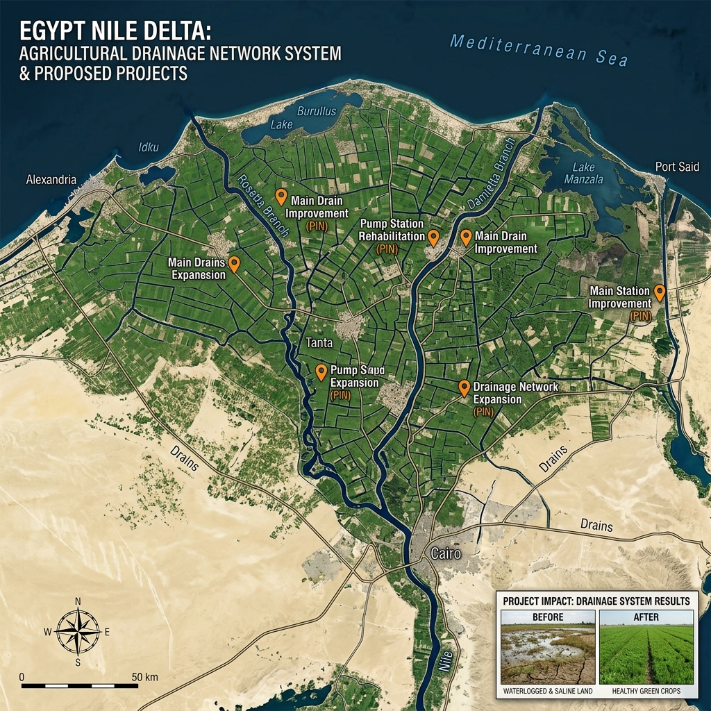
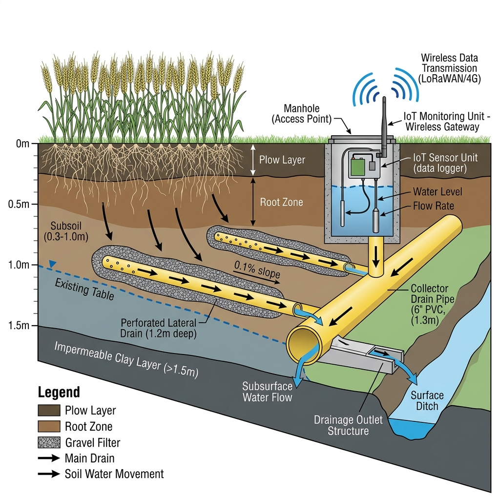
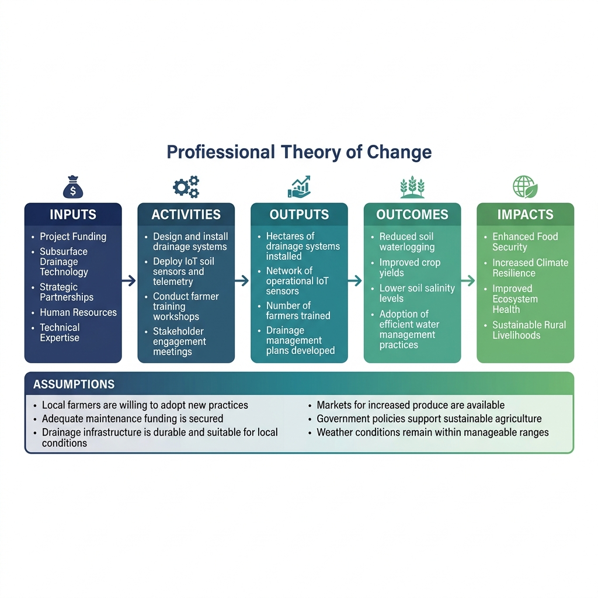
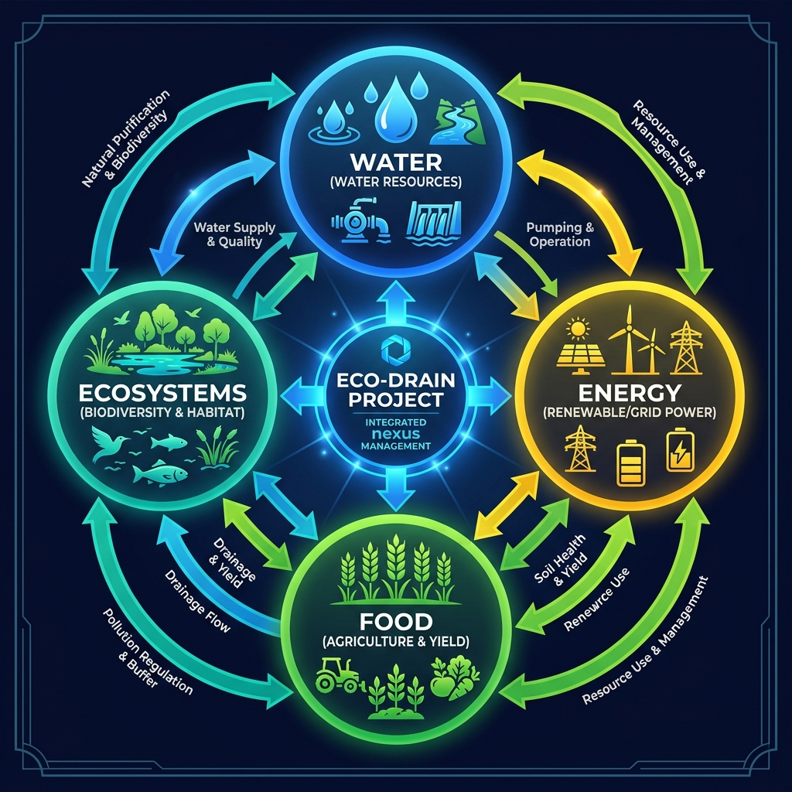
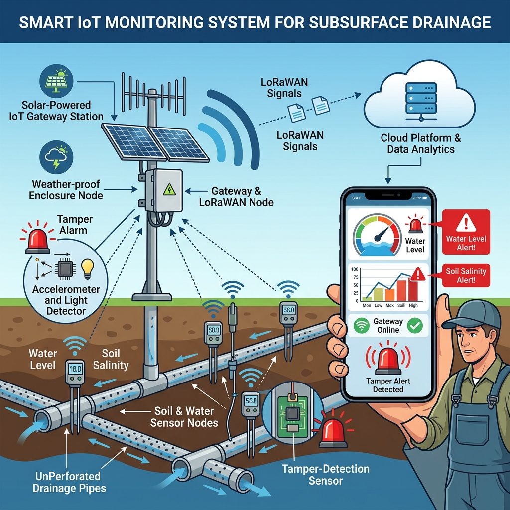
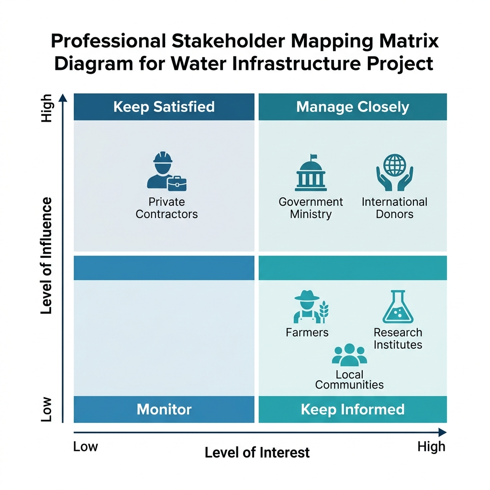
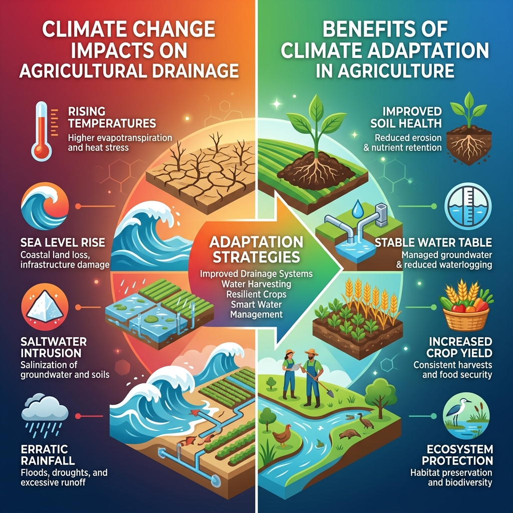
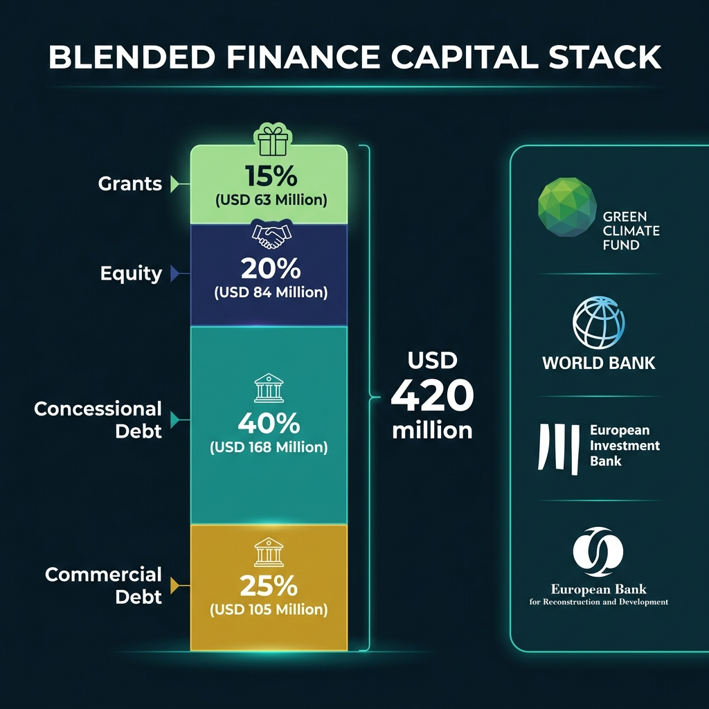

This report is issued as the Group 10 case study of the Financing Resilience and WEFE Nexus Professional Series. It is written to serve as a comprehensive simulated project model for invisible, tamper-proof subsurface drainage retrofitting in Egypt's Nile Delta, providing a worked template for trainees preparing WEFE Nexus project assessments.
تُصدر هذه الوثيقة كـدراسة حالة للمجموعة 10 ضمن سلسلة التدريب المهني حول "تمويل المرونة ومحور WEFE". وهو مصمم ليكون **نموذج مشروع محاكاة متكامل** حول إحلال وتجديد شبكات الصرف المغطى غير المرئية والمقاومة للعبث في دلتا النيل بمصر، لتوفير نموذج تطبيقي وعملي يُحتذى به لإعداد دراسات مشاريع محور WEFE.
Egypt's freshwater endowment has fallen to roughly 560 m³ per capita per year — well below the 1,000 m³ water-poverty threshold — as the Nile's fixed allocation of 55.5 BCM is stretched across a population exceeding 106 million. While mega-scale treatment plants have captured attention, a parallel crisis operates invisibly: over 2.3 million feddans of subsurface drainage have exceeded their design life.
تراجع نصيب الفرد من الموارد المائية المتجددة في مصر ليصل إلى نحو **560 متراً مكعباً سنوياً**، وهو ما يقل كثيراً عن حد الفقر المائي العالمي (1,000 متر مكعب) ويقترب من حد الشح المائي المطلق (500 متر مكعب)، حيث تتوزع حصة مصر التاريخية الثابتة من مياه النيل البالغة **55.5 مليار متر مكعب** على عدد سكان متزايد يتجاوز **106 ملايين نسمة**. وبينما تركزت الاستثمارات الضخمة في محطات معالجة الصرف الزراعي العملاقة عند المصب (مثل محطات بحر البقر، المحسمة، والدلتا الجديدة/الحمام)، تبرز أزمة هيدرولوجية صامتة تحت سطح التربة: **إذ تجاوزت شبكات الصرف المغطى القائمة في مساحة تزيد عن 2.3 مليون فدان في دلتا النيل عمرها الافتراضي وتتطلب إحلالاً وتجديداً عاجلاً**، في حين تفتقر مساحة إضافية تُقدّر بنحو **1.5 مليون فدان** إلى شبكات صرف مغطى ملائمة تماماً.
Subsurface drainage — the network of buried perforated pipes controlling the water table — is the invisible backbone of Egyptian agriculture. Without it, Delta soils become waterlogged and salinised, reducing yields by 10–30%.
وتُمثّل شبكات الصرف المغطى — المكونة من أنابيب حقلية ومجمعة مدفونة تتحكم في منسوب المياه الأرضية وتسمح بغسل الأملاح من منطقة الجذور — **العمود الفقري غير المرئي** لاستدامة القطاع الزراعي في مصر. وبدون التشغيل الكفء لهذه المنظومة، تتعرض الأراضي الطينية المروية بالري الغمر لمشكلتي التغدق وتملح التربة، مما يخفض إنتاجية المحاصيل الرئيسية بنسبة تتراوح بين **10% إلى 30%** ويقوض الأمن الغذائي.
Eco-Drain proposes a transformative approach combining five integrated interventions:
يطرح مشروع **إيكو-درين (Eco-Drain)** رؤية متكاملة تتجاوز النهج التقليدي لصيانة الصرف، من خلال **برنامج إحلال وتجديد لا مركزي لمنظومات الصرف المغطى، مدمج بوحدات طاقة شمسية ومراقب رقمياً بإنترنت الأشياء (IoT)**، لتحويل البنية التحتية للصرف إلى أصل زراعي مرن مناخياً وقابل للتمويل التنموي. يرتكز المشروع على خمسة محاور مترابطة:

The proposed project — USD 420 million — achieves a WEFE Nexus composite score of 92/100.
تبلغ التكلفة الاستثمارية التقديرية للمشروع المقترح **420 مليون دولار أمريكي**، ويحقق المشروع **درجة تقييم مركبة تبلغ 92/100 على مؤشر تكامل محور WEFE**، مما يجعله مرشحاً مثالياً للتمويل المناخي المختلط.
| Attribute | الخاصية الفنية | Detail | تفاصيل المشروع |
|---|---|---|---|
| Project Typeنوع المشروع | Climate-Resilient WEFE Nexus Infrastructure — subsurface drainage retrofitting with IoT monitoring | بنية تحتية مرنة مناخياً متكاملة مع محور WEFE — إحلال وتجديد شبكات الصرف المغطى المدمج بأنظمة المراقبة الذكية | |
| Countryجمهورية مصر العربية | Arab Republic of Egypt | جمهورية مصر العربية | |
| Geographyالنطاق الجغرافي | Nile Delta — Kafr El-Sheikh, Dakahlia, Beheira, Gharbia | أراضي دلتا النيل — محافظات كفر الشيخ، الدقهلية، البحيرة، والغربية | |
| Innovationالابتكار التكنولوجي | First tamper-proof IoT monitoring of subsurface drainage at scale | دمج تقنيات إنترنت الأشياء (IoT) لرصد التدفقات والاهتزازات الجوفية لكشف التلاعب والانسداد |
| Criterion | معايير التقييم | Score (/10) | الدرجة (/10) |
|---|---|---|---|
| Water Impact | الأثر المائي (خفض التملح وتوفير المياه) | 10 | |
| Energy Integration | تكامل الطاقة (الطاقة الشمسية الموزعة) | 8 | |
| Food Security Impact | تأثير الأمن الغذائي (زيادة إنتاجية المحاصيل) | 10 | |
| Ecosystem Benefits | فوائد النظم البيئية (معالجة الصرف بالبحيرات) | 8 | |
| Climate Resilience | المرونة المناخية (التكيف مع تغيرات دلتا النيل) | 10 | |
| Financial Attractiveness | الجاذبية المالية (العوائد وتجنب التكاليف) | 7 | |
| Innovation | الابتكار (منظومة كشف العبث والتوأم الرقمي) | 9 | |
| Replicability | القابلية للتكرار والتوسع المستقبلي | 10 | |
| Composite Scoreمجموع الدرجات المركب | 92/100 |
Strong candidate for: GCF, Adaptation Fund, World Bank, AfDB, EIB, IsDB, EU Global Gateway
المشروع يلبي كافة متطلبات الجاهزية الفنية والبيئية والاجتماعية للتأهل لصناديق التمويل والتنمية الدولية مثل: صندوق المناخ الأخضر، صندوق التكيف، البنك الدولي، بنك التنمية الأفريقي، بنك الاستثمار الأوروبي، البنك الإسلامي للتنمية، البوابة العالمية للاتحاد الأوروبي
Egypt's agricultural miracle — feeding over 106 million people from roughly 9 million feddans — rests on an invisible foundation: the nation's subsurface drainage network.
ترتكز استدامة الزراعة المروية المكثفة في مصر — والتي تؤمن الغذاء لأكثر من 106 ملايين نسمة في رقعة زراعية تبلغ نحو 9 ملايين فدان — على بنية تحتية حيوية غير مرئية هي شبكات الصرف المغطى. تعمل هذه المنظومة تحت سطح التربة على خفض منسوب المياه الأرضية وتجنب تملح قطاع التربة الحقلية.
| Metric | المؤشر الهيدروليكي | Value | القيمة التقديرية | Source | المصدر الفني |
|---|---|---|---|---|---|
| Total subsurface drainage | إجمالي مساحة أراضي الصرف المغطى المنفذة | ≈6.0 M feddans (≈2.52M ha) | MWRI / EPADP | ||
| Nile Delta coverage | مساحة الصرف المغطى في نطاق الدلتا | ≈4.3 M feddans (≈1.81M ha) | MWRI / EPADP | ||
| Renewal completed | شبكات الصرف التي تم إحلالها وتجديدها سابقاً | ≈2.3 M feddans | EPADP | ||
| Open drain network | إجمالي أطوال المصارف العامة المكشوفة | ≈22,000 km / 4,444 drains | EPADP | ||
| Systems past design life | شبكات الصرف المغطى التي تجاوزت عمرها الافتراضي | ≈2.3 M feddans (by 2026) | EPADP |
Subsurface drainage is buried beneath the soil, making visual inspection impossible. This leads to undetected maintenance failures, waterlogging, and topsoil salinization. Crucially, visible surface inspection chambers (manholes) and open drainage outlets are highly vulnerable to unauthorized farmer interventions, such as installing physical plugs to raise the water table for water-intensive crops (e.g., rice) or stealing manhole covers.
تُدفن شبكات الصرف المغطى بالكامل تحت الأرض، مما يجعل الفحص البصري المستمر مستحيلاً ويعوق الاكتشاف المبكر للأعطال. والأخطر من ذلك هو تعرض غرف التفتيش (البالوعات) والمصبات الظاهرة على السطح لتعديات وتلاعب من بعض المزارعين (مثل وضع سدادات طينية لرفع منسوب المياه الأرضية لزراعة محاصيل شرهة للمياه كالأرز، أو سرقة أغطية الغرف وتخريب المكونات).
To eliminate these risks, Eco-Drain implements a physical anti-tampering design and links drainage control directly with agricultural water needs:
للقضاء على هذه التعديات، يطبق مشروع Eco-Drain تصميماً هندسياً فيزيائياً لمنع التلاعب مع ربط التحكم الهيدروليكي بالاحتياجات المائية الحقيقية للمحاصيل:

| Phase | المرحلة | Period | الفترة الزمنية | Coverage | المساحة المستهدفة بال فدان | Co-Financier | الجهات التمويلية الشريكة |
|---|---|---|---|---|---|---|---|
| Pre-NDP Projects مشاريع ما قبل البرامج الوطنية | 1970–1992 | ≈2.3M feddans ≈2.3 مليون فدان | World Bank / Bilaterals البنك الدولي وجهات ثنائية | ||||
| NDP I | 1992–2000 | ≈790,000 feddans ≈790 ألف فدان | World Bank | ||||
| NDP II | 2001–2015 | ≈940,000 feddans ≈940 ألف فدان | World Bank / AfDB البنك الدولي / بنك التنمية الأفريقي | ||||
| NDP III | 2013–2026 | ≈500,000 feddans ≈500 ألف فدان | World Bank / KfW البنك الدولي / بنك الإعمار الألماني | ||||
| NDP IV (Proposed) NDP IV (المقترح) | 2026+ | Under preparation تحت الإعداد والتمويل | Climate Blended Finance تمويل مناخي مختلط | ||||
| Eco-Drain | 2027–2035 | 100,000 feddans (pilot) 100,000 فدان (تجريبي) | Blended Climate Finance التمويل التنموي والمناخي المختلط |
| Challenge | التحدي القائم | Impact | الأثر المترتب عليه | Eco-Drain Response | منهجية حل إيكو-درين |
|---|---|---|---|---|---|
| Ageing drainage | تقادم شبكات الصرف المغطى | 2.3M feddans past design life; 10–30% yield loss | 2.3 مليون فدان تجاوزت عمرها الافتراضي؛ خسائر 10-30% in إنتاجية الأراضي | Modern retrofitting, 40+ year life | إحلال وتجديد كامل بأنابيب HDPE مجهزة بفلاتر جيوتكستيلية (عمر 40+ سنة) |
| Monitoring gap | غياب الرصد والبيانات الفورية | No real-time data; failures after damage | عدم توفر بيانات آنية عن الأعطال والانسدادات إلا بعد تملح وغرق الحقول | 5,000+ IoT sensor nodes | نشر 5,000 عقدة استشعار ذكية لمراقبة المناسيب والتدفق لحظياً |
| Tamper vulnerability | تعرض الشبكات للعبث العشوائي | ~25–40% failures from tampering | نحو 25-40% من انسدادات وأعطال الشبكة ناتجة عن التلاعب والوصلات غير القانونية | Tamper-proof sensors + alerts | أغطية غرف تفتيش محكمة مع مستشعرات اهتزاز لكشف التعديلات وموقعها بالـ GPS |
| Energy costs | ارتفاع تكلفة تشغيل محطات الرفع | Rising pumping OPEX | ارتفاع مستمر في تكاليف الطاقة والكهرباء لتشغيل طلمبات الصرف | 50 MW solar, 40% reduction | تركيب منظومة طاقة شمسية موزعة بقدرة 50 ميجاوات لخفض استهلاك الشبكة بنسبة 40% |
| Over-irrigation | الهدر الناتج عن الإفراط في ري الغمر | Excessive drainage volumes | زيادة كميات مياه الصرف المتولدة وتملح التربة وارتفاع مناسيب المياه الأرضية | Smart irrigation, 25–30% savings | ربط بيانات استشعار الصرف بمنظومة ري ذكي لتقليل الهدر بنسبة 25-30% |
| Ecosystem damage | تدهور النظم البيئية المائية | Pollutants into Delta lakes | تصريف مياه صرف محملة بالأملاح والأسمدة والمبيدات في بحيرات الدلتا (مثل المنزلة) | Constructed wetlands | إنشاء أراضٍ رطبة اصطناعية للمعالجة الحيوية للمياه قبل تصريفها النهائي |

| Stage | مراحل التدخل | Elements | عناصر المسار المنهجي للمشروع |
|---|---|---|---|
| Inputsالمدخلات (Inputs) | USD 420M; EPADP capacity; DRI expertise; IoT; solar PV; geotextile | استثمارات بقيمة 420 مليون دولار؛ قدرات الهيئة (EPADP) ومعهد البحوث (DRI)؛ معدات إنترنت الأشياء والألواح الشمسية والجيوتكستيل. | |
| Activitiesالأنشطة (Activities) | Pipe replacement; sensor deployment; solar construction; wetlands; training | تنفيذ حفر وتركيب شبكات الصرف؛ دمج المستشعرات الذكية؛ بناء المحطات الشمسية؛ حفر وتجهيز بحيرات الأراضي الرطبة؛ تدريب المزارعين. | |
| Outputsالمخرجات (Outputs) | 100,000 feddans; 5,000 sensors; 50 MW; 20 wetlands; 10,000 farmers trained | تحديث شبكات الصرف في 100,000 فدان؛ تشغيل 5,000 مستشعر؛ توليد طاقة بـ 50 ميجاوات؛ تشغيل 20 أرض رطبة؛ تدريب 10,000 مزارع. | |
| Outcomesالنتائج المحققة (Outcomes) | Salinity -30–40%; yields +15–25%; energy -40%; tamper -80% | خفض ملوحة التربة 30-40%؛ زيادة إنتاج الغذاء 15-25%؛ توفير طاقة 40%؛ الحد من حوادث العبث والتخريب بنسبة 80%. | |
| Impactsالأثر التنموي (Impacts) | Food security 200,000+; ecosystem restoration; climate resilience; replicable model | تعزيز الأمن الغذائي لأكثر من 200,000 نسمة بالدلتا؛ استعادة النظم البيئية المائية بالبحيرات الشمالية؛ زيادة قدرة التكيف مع التغير المناخي. |
Eco-Drain aligns with national goals by promoting agricultural resource efficiency, securing smallholder incomes, protecting soil from salinity, and supporting sustainable rural livelihoods.
يتوافق المشروع مع رؤية مصر 2030 لتحقيق التنمية الزراعية المستدامة، من خلال حماية التربة من التملح، وتحسين الكفاءة المائية، وتأمين وزيادة دخل صغار المزارعين بالدلتا.
Directly supports national adaptation priorities through water conservation, integrating distributed solar PV to lower emissions, and constructed wetlands to restore local ecosystems.
يدعم مستهدفات التكيف للدولة من خلال توفير المياه العذبة، واستبدال الطاقة التقليدية في محطات الرفع بالطاقة الشمسية النظيفة، وفلترة مياه الصرف الزراعي بالبحيرات طبيعياً.
Eco-Drain acts as a pioneering digital transformation pilot for MWRI's Water System 2.0. By integrating IoT soil/flow sensors, telemetric monitoring, satellite remote sensing, motorized drainage valves, and AI digital water twins, the system ensures precision water management and prevents unauthorized water extraction.
يمثل المشروع نموذجاً تطبيقياً رائداً للتحول الرقمي المعتمد في منظومة المياه والري 2.0 الرئاسية. حيث يدمج مستشعرات التربة والتدفق (IoT) والتحكم الرقمي بالبوابات والصمامات، والتنبؤ بالأعطال بالتوأم الرقمي المحدث باستمرار لضمان توفير وإدارة المياه بكفاءة مطلقة.

All four nexus sectors addressed through physically interconnected infrastructure and shared digital monitoring. Tight bidirectional feedback loops between water, energy, food, and ecosystems.
تتم معالجة القطاعات الأربعة للترابط من خلال بنية تحتية متكاملة فيزيائياً ونظام رصد رقمي موحد. يؤدي تحسين الصرف (المياه) إلى مكافحة التملح وزيادة إنتاج الغذاء (الغذاء)؛ وتوفر الخلايا الشمسية (الطاقة) طاقة نظيفة للضخ ورصد الشبكات؛ فيما تحمي الأراضي الرطبة (النظم البيئية) نوعية المياه وتدعم التنوع البيولوجي.
Scope: 100,000 feddans. HDPE pipes (80–110mm) at 1.0–1.5m depth. Pre-wrapped geotextile envelopes. Tamper-resistant manholes. Design life: 40+ years.
النطاق الفني: 100,000 فدان. استبدال الأنابيب الحقلية التالفة بأخرى مصنوعة من البولي إيثيلين عالي الكثافة (HDPE) بأقطار 80-110 مم على عمق يتراوح بين 1.0 إلى 1.5 متر، وتوصيلها بالمجمعات الرئيسية. استخدام مرشحات/أغلفة جيوتكستيلية ملفوفة مسبقاً لمنع دخول حبيبات الطمي والانسدادات. تركيب غرف تفتيش خرسانية مسلحة بأغطية مؤمنة ومحكمة الإغلاق. العمر التصميمي المستهدف: 40 عاماً فأكثر.

5,000+ sensor nodes with: water level, flow, soil moisture, salinity (EC), vibration (tamper), temperature. LoRaWAN mesh + cellular backhaul. ESP32 edge computing. GPS-stamped tamper alerts.
نشر 5,000 عقدة استشعار ذكية تشمل: مستشعرات قياس منسوب المياه بالموجات فوق الصوتية، أجهزة قياس تدفق كهرومغناطيسية، مجسات رطوبة وملوحة التربة (EC)، ومستشعرات اهتزاز (مقياس تسارع) مثبتة على الجدران الداخلية لغرف التفتيش لرصد أي محاولات فتح غير مصرح بها أو عمليات حفر وتخريب وتحديد موقعها عبر الـ GPS وإرسال تنبيه فوري عبر شبكة LoRaWAN والاتصال الخلوي.
Distributed across ~25 pumping stations. Battery storage (4-hour). Production: ~90 GWh/year. Primary: pumping (~35 MW) + IoT (~1 MW); surplus to grid (~14 MW).
إنشاء محطات خلايا شمسية موزعة بجوار 25 محطة رفع وتصريف بالدلتا بطاقة إجمالية 50 ميجاوات مجهزة بأنظمة تخزين بالبطاريات بسعة 4 ساعات لتأمين استمرارية العمل. الإنتاج المتوقع: 90 جيجاوات ساعة/سنة. استخدام 35 ميجاوات لتشغيل الطلمبات، 1 ميجاوات لمنظومات إنترنت الأشياء والتحكم، وربط وتصدير الفائض المقدر بـ 14 ميجاوات إلى الشبكة القومية للكهرباء.
Bespoke Irrigation Scheduling: Soil moisture sensors in the root zone are connected to solar-powered automatic field valves. Irrigation is executed strictly on demand based on plant transpiration needs, preventing over-watering.
Controlled Subsurface Drainage: Drainage outlets and collector pump stations discharging into open public drains are equipped with IoT-controlled motorized gate valves. When soil sensors indicate that the plant requires moisture, the drainage outlet is automatically closed. This raises the water table locally within the root zone, enabling the plant to absorb moisture via capillary rise, thereby reducing external irrigation needs. The outlet gate is opened only when soil salinity sensors detect salt buildup (triggering leaching drainage) or if the water table exceeds the critical threshold to prevent waterlogging.
10-Feddan Pilot Test Site: To validate this concept, a 10-feddan pilot area serving a single isolated subsurface collector network will be established. This site will serve as the validation unit, demonstrating the precise dynamic feedback loops between soil moisture, capillary rise, and drainage valve control before scaling up to the full 100,000 feddans.
جدولة الري الذكي المخصصة: ربط مستشعرات رطوبة التربة في منطقة الجذور بصمامات ميكانيكية آلية تعمل بالطاقة الشمسية، لتوفير مياه الري حسب الاحتياج الفعلي للنبات فقط، مما يمنع الفقد والهدر المائي.
الصرف المغطى المحكوم (Controlled Subsurface Drainage): تزويد مصبات الصرف المغطى ومحطات الرفع الفرعية التي تصب في المصارف المكشوفة ببوابات كهربائية ميكانيكية (Motorized Valves) يتم التحكم فيها عن بُعد عبر إنترنت الأشياء. عند استشعار حاجة التربة والنبات للمياه، تُغلق بوابة مصب الصرف تلقائياً للاحتفاظ بالرطوبة الأرضية ورفع منسوب المياه الأرضية محلياً في منطقة الجذور، مما يتيح للنبات امتصاص المياه عبر خاصية الصعود الشعري (Capillary Rise)، وهو ما يقلل من كميات مياه الري الإضافية المطلوبة. وتُفتح بوابات المصبات تلقائياً فقط عند رصد مستشعرات الملوحة لتراكم الأملاح (لإجراء غسيل للتربة) أو عند ارتفاع منسوب الماء الأرضي عن الحد الحرج لمنع تغدق الجذور.
الموقع الريادي التجريبي (10 أفدنة): لتطبيق واختبار هذه التكنولوجيا بشكل عملي ودقيق، يتم تخصيص مساحة 10 أفدنة كحقل تجريبي يغطي شبكة مجمع صرف مغطى معزولة بالكامل. سيمثل هذا الموقع وحدة التحقق الفني والنمذجة لقياس نسب توفير المياه الفعلي، تحسن المحاصيل، وترشيد طاقة الضخ قبل التعميم الواسع النطاق.
Expected Outcome: A 25–30% reduction in over-irrigation, yielding approximately 150 million m³/year of water savings across the project scale (100,000 feddans), equivalent to roughly 1,500 m³ per feddan per year.
النتائج المتوقعة: تقليل الإفراط في مياه الري بنسبة 25% إلى 30%، مما يحقق وفرًا مائيًا يقارب 150 مليون متر مكعب سنويًا على مستوى مساحة المشروع (100,000 فدان)، وهو ما يعادل حوالي 1,500 متر مكعب للفدان سنويًا.
20 constructed wetlands (4,760 feddans) for biological water treatment. Cloud dashboard, mobile app, and AI predictive maintenance based on real-time feedback loops. 3D Digital Twin updated via IoT data, compatible with MWRI's Irrigation System 2.0.
تصميم 20 منطقة أراضٍ رطبة اصطناعية (بمساحة 4,760 فدان) للمعالجة البيولوجية لمياه الصرف الزراعي من المغذيات الزائدة والسموم قبل التصريف في البحيرات الشمالية. تطوير منصة تحكم رقمية سحابية مجهزة بالذكاء الاصطناعي للصيانة التنبؤية، وإنشاء توأم رقمي (Digital Twin) ثلاثي الأبعاد للشبكة متوافق مع معايير وزارة الموارد المائية والري.


| Adaptation Benefit | آلية التكيف المناخي | Mechanism | طريقة العمل الهيدروليكية | Quantified Impact | الأثر المقاس كمياً |
|---|---|---|---|---|---|
| Controlled drainage | الصرف المغطى المحكوم | Adjustable outlet levels manage water table | التحكم في مناسيب مخارج الصرف لتنظيم منسوب المياه الأرضية موسمياً | Salt accumulation reduced 30–40% | خفض تراكم الأملاح في منطقة الجذور بنسبة 30% إلى 40% |
| Real-time monitoring | الرصد الفوري والإنذار المبكر | IoT detects anomalies instantly | استشعار فوري للانسدادات والارتفاعات المفاجئة لمستويات المياه تحت السطحية | Response time: weeks → hours | تقليل زمن الاستجابة لإصلاح الشبكات من أسابيع إلى بضع ساعات فقط |
| Solar resilience | مرونة الطاقة الذاتية | Off-grid pumping during disruptions | استمرار عمل طلمبات سحب مياه الصرف بشكل مستقل أثناء انقطاع الشبكة الكهربائية | Drainage continues in extreme weather | حماية الأراضي من الغرق والتغدق في حالات الطقس المتطرف والسيول |
| Smart irrigation | تكامل الري الذكي والترشيد | Data-driven water reduction | تقنين استخدام المياه بالاعتماد على رطوبة التربة الفعلية وليس الجداول الزمنية الجامدة | 150M m³/year saved | توفير حوالي 150 مليون متر مكعب سنوياً من مياه النيل |
| Component | البند المالي ومكونات المشروع | USD M | % |
|---|---|---|---|
| Subsurface Drainage Retrofitting | إحلال وتجديد شبكات الصرف المغطى (أنابيب، فلاتر، تركيبات) | 180 | 42.9% |
| IoT Monitoring Network | منظومة إنترنت الأشياء والمراقبة عن بعد (مستشعرات وبوابات LoRa) | 35 | 8.3% |
| Solar PV (50 MW) | شبكة الخلايا الشمسية الموزعة وبطاريات التخزين لمعدات الرفع | 85 | 20.2% |
| Constructed Wetlands | إنشاء الأراضي الرطبة الاصطناعية وهندسة المصبات | 40 | 9.5% |
| Smart Irrigation | مكونات تكامل الري الذكي (متحكمات حقلية وصمامات إلكترونية) | 25 | 6.0% |
| Digital Platform | برمجيات التحكم والتوأم الرقمي ونماذج الذكاء الاصطناعي | 15 | 3.6% |
| Management, ESIA, Contingency | إدارة المشروع، التقييم البيئي والاجتماعي، والاحتياطيات الفنية | 40 | 9.5% |
| Totalالتكلفة الإجمالية التكلفة التقديرية للمشروع | 420 | 100% |

| Instrument | أدوات التمويل المقترحة | USD M | % |
|---|---|---|---|
| Grant / TA | المنح والمساعدات الفنية (لدراسات الجدوى والتدريب والرقابة) | 63 | 15% |
| Equity | المساهمة الرأسمالية الوطنية (أصول حكومية وشراكات محلية) | 84 | 20% |
| Concessional Debt | القروض التنموية الميسرة (بنوك التنمية وصناديق المناخ) | 168 | 40% |
| Commercial Debt | القروض التجارية (مؤسسات التمويل الخاصة والبنوك التجارية) | 105 | 25% |
| Totalإجمالي هيكل رأس المال | 420 | 100% |
The total investment of USD 420 million translates to an all-in cost of **USD 4,200 per feddan** across all six WEFE components. Specifically, Component 1 (Subsurface Retrofitting) costs USD 180 million, representing **USD 1,800 per feddan (approximately EGP 86,400 per feddan)**.
يبلغ إجمالي الاستثمار المستهدف للمشروع 420 مليون دولار لمساحة 100,000 فدان، أي ما يعادل **4,200 دولار للفدان الواحد** (شاملاً المكونات الستة لمحور WEFE). ويبلغ نصيب الفدان من مكون الإحلال والتجديد المطور (Component 1) نحو **1,800 دولار للفدان (ما يعادل تقريباً 86,400 جنيه مصري للفدان)**.
Traditional subsurface drainage in Egypt is estimated at approximately **EGP 18,000 per feddan**. Eco-Drain's premium is fully justified by the following lifecycle and operational advantages:
تُقدّر التكلفة الإجمالية للصرف التقليدي في مصر بـ **18,000 جنيه للفدان**. الميزانية المخصصة لمشروع إيكو-درين لها ما يبررها تماماً من واقع العوائد المالية والتشغيلية الممتدة:
The smart irrigation component has a dedicated CAPEX of USD 25 million. The economic feasibility is demonstrated via two main methods:
يمتلك مكون الري الذكي ميزانية استثمارية مخصصة تبلغ 25 مليون دولار. وتتضح الجدوى الاقتصادية له عبر طريقتين رئيسيتين:
| Risk Type | نوع الخطر التشغيلي والمالي | Mitigation Tool | آلية التخفيف والحل المقترح | Expected Effect | الأثر والنتيجة المتوقعة |
|---|---|---|---|---|---|
| Revenue Risk | مخاطر الإيرادات | Solar PPA; government drainage service agreements | اتفاقيات شراء الطاقة الشمسية (PPA) طويلة الأجل وعقود الصيانة الحكومية | Stable cashflow base | تأمين قاعدة تدفقات نقدية مستقرة |
| O&M Costs | مخاطر تكاليف التشغيل والصيانة | Solar PV replaces grid; IoT predictive maintenance | إحلال الطاقة الشمسية محل الكهرباء وتفعيل الصيانة التنبؤية بالاستشعار | OPEX reduced 30-40% | مستويات تشغيل خفضت بنسبة 30% إلى 40% مقارنة بالوضع الحالي |
| Tamper / Vandalism Risk | مخاطر التلاعب والتخريب | IoT tamper detection; community education; manhole security | مستشعرات الاهتزاز والتدفق، قفل غرف التفتيش، وإشراك المزارعين | 80% reduction in tamper | تخفيض بنسبة 80% في معدلات التلاعب وإتلاف الخطوط |
| Farmer Resistance | مقاومة المزارعين للتحول | Participatory design with WUAs; 10-feddan pilot demonstration | التصميم التشاركي مع روابط مستخدمي المياه، ونموذج إرشادي بمساحة 10 أفدنة | Enhanced community adoption | تعزيز تقبل وتبني المزارعين للنظم الحديثة |
| Clogging/Sedimentation | انسداد الصمامات بالرواسب | Diaphragm valves; self-cleaning mesh filters; backwash cycles | استخدام صمامات غشائية للمياه العكرة وفلاتر ذاتية الغسيل العكسي | Minimized blockage incidents | منع الانسدادات الطينية وتوقف عمل النظام |
| Connectivity Outages | انقطاع شبكة الاتصالات | Autonomous local edge intelligence (ESP32); cellular backup | برمجة المتحكمات للعمل والتحكم المحلي التلقائي بشكل مستقل عن الإنترنت | Uninterrupted field operations | استمرارية عمل صمامات الري وبوابات الصرف دون توقف |
| Physical Vandalism | تخريب أو سرقة المعدات الميدانية | Buried housings; accelerometer vibration alerts (GSM) | دفن صناديق التحكم، وتفعيل إنذارات الاهتزاز الفورية عبر مقياس التسارع | 90% reduction in theft | تخفيض حالات السرقة والإتلاف بنسبة 90% |
| Scenario | سيناريو التحليل المالي | Assumption | الفرضية المالية والتشغيلية المطبقة | DSCR |
|---|---|---|---|---|
| Base case | السيناريو المرجعي الأساسي | As projected | تحقق الإيرادات وتكاليف التشغيل وفق التقديرات الفنية بدقة | 1.35x |
| Low revenue | سيناريو انخفاض الإيرادات | -20% revenue | تراجع بنسبة 20% في عوائد الطاقة المنتجة وفرز شهادات الكربون وتوفير المياه | 1.15x |
| High OPEX | سيناريو ارتفاع التكاليف التشغيلية | +30% O&M | زيادة تكاليف الصيانة وقطع الغيار والعمالة بنسبة 30% ناتجة عن التضخم | 1.10x |
| Combined stress | سيناريو الإجهاد المركب المشترك | Low rev + high OPEX | حدوث انخفاض الإيرادات بنسبة 20% بالتوازي مع زيادة تكاليف التشغيل بنسبة 30% | 0.95x |
| Criteria | المعايير المعتمدة لتقييم مقترحات التمويل | Score (/2) | الدرجة الممنوحة (/2) |
|---|---|---|---|
| Nexus Integration | تكامل قطاعات المحور (مياه، طاقة، أمن غذائي، بيئة) | 2 | |
| Expected Outcomes | وضوح النتائج والمخرجات ومؤشر الأثر المناخي | 2 | |
| Eligibility | أهلية الدولة المستفيدة والشركاء الوطنيين | 2 | |
| Partnership Feasibility | جدوى التنسيق بين الوزارات والهيئة ومعهد البحوث | 2 | |
| Budget Alignment | تناسب حجم الميزانية مع سقف المشاريع الكبرى المعتمدة لدى الصندوق | 2 | |
| MRV | توفر نظام آلي وموثوق للمراقبة والإبلاغ والتحقق (MRV) | 2 | |
| Readiness | الجاهزية الفنية والمؤسسية للجهة المنفذة (EPADP) | 2 | |
| Total — Decision: GOالدرجة الإجمالية المحققة والقرار: (مستوفٍ بالكامل - انطلق) | 14/14 |
The IoT monitoring platform provides automated, continuous MRV data rather than relying on periodic manual surveys:
توفر منصة إنترنت الأشياء بيانات آلية ومستمرة لإطار المراقبة والإبلاغ والتحقق (MRV) بدلاً من الاعتماد على المسوحات الميدانية الدورية:
Unlike drainage reallocation projects (e.g., Al-Mahsama), Eco-Drain retrofits in place — eliminating social risks to downstream smallholders who rely on drainage canals. Inherently more socially sustainable.
أظهرت دراسات مشروع "المحسمة" المرجعي نشوء نزاعات وحرمان لصغار مزارعين في المصب نتيجة إعادة توجيه مسار مياه الصرف خارج أراضيهم. ويتفوق مشروع **إيكو-درين** بكونه منظومة إحلال وتجديد في مكانها الأصلي (In-situ Retrofitting) مما يحافظ على استقرار حيازات المزارعين التاريخية ويمنع أي آثار سلبية على سبل عيشهم.
| Indicator | المؤشر البيئي والتنموي | Impact | المستهدف الكمي المتوقع |
|---|---|---|---|
| Drainage restored | مساحة الأراضي التي تم إحلال وتجديد شبكات صرفها المغطى | 100,000 feddans (42,000 ha) | |
| Yield increase | معدل زيادة إنتاجية المحاصيل الحقلية الاستراتيجية | 15–25% | |
| Solar installed | القدرة الإنتاجية الإجمالية لمحطات الطاقة الشمسية الموزعة | 50 MW / ~90 GWh/yr | |
| CO₂ reduction | معدل خفض انبعاثات غاز ثاني أكسيد الكربون المكافئ | ~100,000 tCO₂/yr | |
| Water savings | إجمالي كميات مياه الري الموفرة عند الحقل سنوياً | 150 M m³/yr | |
| Tamper reduction | معدل انخفاض التعديات والعبث العشوائي بالشبكات الجوفية | 80% | |
| Jobs created | فرص العمل المباشرة وغير المباشرة المتولدة خلال التنفيذ والتشغيل | 5,000 + 500 O&M | |
| Beneficiaries | عدد المزارعين المستفيدين بشكل مباشر من استعادة جودة الأراضي | 200,000+ | |
| Wetlands | مساحة الأراضي الرطبة المخصصة للمعالجة الحيوية | 2,000 ha |
Concept: Managing Water, Energy, Food, and Ecosystems together as a single connected loop to prevent waste. Solar power (energy) pumps water (water) for crops (food) while wetlands filter the drainage (ecosystem).
المفهوم: إدارة ملفات المياه، والطاقة، والغذاء، والبيئة بشكل متكامل كحلقة واحدة مترابطة؛ حيث نستخدم الطاقة الشمسية (طاقة) لتشغيل محطات صرف وري الحقول (مياه) لإنتاج المحاصيل (غذاء) وننقي الصرف بالأراضي الرطبة (بيئة).
Concept: A network of perforated pipes buried 1.2 to 1.5 meters underground to pull excess water and salts away from plant roots, preventing soil waterlogging.
المفهوم: شبكة من الأنابيب البلاستيكية المثقبة المدفونة تحت الحقل بعمق يتراوح بين 1.2 إلى 1.5 متر، وظيفتها سحب المياه الأرضية الزائدة والأملاح من حول الجذور لتصريفها ومنع تغدق التربة.
Concept: Placing remote-controlled valves at pipe outlets to block drainage and store water when the soil is dry, and opening them only to flush salts or drain excess floods.
المفهوم: وضع بوابات وصمامات إلكترونية نتحكم بها عن بعد عند مخارج أنابيب الصرف؛ تُغلق البوابات للاحتفاظ برطوبة التربة عند حاجة النبات، وتُفتح لغسيل الأملاح أو تصريف الغمر.
Concept: The physical phenomenon where water travels upward against gravity through tiny soil pores. Raising the water table allows plant roots to drink from below naturally.
المفهوم: ظاهرة فيزيائية يرتفع بها الماء لأعلى ضد الجاذبية عبر مسامات التربة الضيقة. رفع منسوب المياه تحت الحقل يدفع الرطوبة للجذور ذاتياً دون ري سطحي إضافي.
Concept: A simple water budget calculating that irrigation inputs must exactly equal crop consumption, evaporation, and drainage outputs to avoid water logging.
المفهوم: حساب مائي دقيق يعادل بين كميات المياه الداخلة للحقل (ري وأمطار) والخارجة منه (بخر نباتي وصرف ورطوبة مخزنة) لضمان عدم إهدار المياه.
Concept: Buried smart sensors (IoT) measuring soil stats combined with a 3D virtual copy (Digital Twin) on computer screens to show exact flow and blockages without digging.
المفهوم: مستشعرات حقلية ذكية مدفونة (إنترنت الأشياء) ترسل البيانات لاسلكياً لإنشاء نموذج تفاعلي ثلاثي أبعاد (توأم رقمي) يحاكي الشبكة على الشاشات لكشف التلاعب والانسداد فوراً.
Concept: Shallow gravel-lined ponds planted with native reeds that act as natural filters, cleaning contaminants, nitrates, and salts from drainage water biologically.
المفهوم: بحيرات صناعية ضحلة مبطنة بالحصى والرمل ومزروعة بنباتات كالبوص والبردي، تمتص الملوثات والمغذيات الزراعية الكيماوية لتنقية مياه الصرف طبيعياً.
Concept: Mixing international green grants, low-interest climate loans, and commercial investments to fund high-cost sustainability projects affordably.
المفهوم: خلط مصادر مالية متنوعة تشمل منحاً بيئية مجانية مع قروض تنموية طويلة الأجل ذات فائدة شبه منعدمة واستثمارات تجارية لتوفير رأس مال للمشاريع البيئية الكبرى.
Government: MWRI — *National Water Resources Plan for Egypt (NWRP 2017-2037)* and *Irrigation System 2.0 Strategic Briefing* | EPADP — *Annual Statistical Report on Covered Drainage Networks and Rehabilitation Requirements (2025)* | DRI / NWRC — *Technical Design Standards, Soil Salinity Telemetry, and Hydraulic Flow Criteria (2024)* | EEAA — *ESIA Guidelines for Infrastructure Projects (2021)*
حكومية ورسمية: وزارة الموارد المائية والري (*الخطة القومية للموارد المائية لمصر 2017-2037* وملخص *نظام الري 2.0 الاستراتيجي*) | الهيئة المصرية العامة لمشروعات الصرف (*التقرير الإحصائي السنوي لشبكات الصرف المغطى واحتياجات الإحلال 2025*) | معهد بحوث الصرف والمركز القومي لبحوث المياه (*المعايير الفنية وتصميم الهيدروليكي للصرف بالدلتا 2024*) | جهاز شئون البيئة (*الدليل الإرشادي لتقييم الأثر البيئي والاجتماعي 2021*).
Multilateral: World Bank Group — *National Drainage Project I* (Project ID: P005118), *Second National Drainage Project* (Project ID: P045486), *Third National Drainage Project* (Project ID: P125722) | AfDB — *National Drainage Programme Phase IV (NDP IV)* Project Appraisal | KfW — *Co-financing and Modernisation of Egypt's Subsurface Drainage Assets (2018)* | GCF — *Proposal Preparation Guidelines (2024)* | FAO — *WEF Nexus Rapid Appraisal Manual* | OECD — *Infrastructure Governance and MCA Guidelines (2022)*
منظمات دولية: مجموعة البنك الدولي (*مشروع الصرف الوطني الأول* ID: P005118، *مشروع الصرف الوطني الثاني* ID: P045486، *مشروع الصرف الوطني الثالث* ID: P125722) | بنك التنمية الأفريقي (*البرنامج الوطني الرابع للصرف NDP IV*) | بنك الإعمار الألماني (*التمويل المشترك لتطوير أصول الصرف بمصر 2018*) | صندوق المناخ الأخضر (*أدلة إعداد المقترحات التمويلية 2024*) | منظمة الأغذية والزراعة (*دليل التقييم السريع لمحور WEFE*) | منظمة التعاون والتنمية الاقتصادية (*حوكمة البنية التحتية والتحليل متعدد المعايير*).
Academic: MDPI — Drainage studies | WUR — Drainage modernisation | TH Köln — WEFE methodology | Ain Shams, Mansoura Universities
أبحاث ودراسات أكاديمية: دوريات MDPI العلمية (دراسات رصد ملوحة التربة والتغدق بالدلتا) | جامعة فاجينينجن الهولندية (WUR) (دراسات تحديث منظومات الصرف الزراعي) | معهد إدارة التكنولوجيا في المناطق المدارية بجامعة كولونيا التطبيقية (TH Köln) (منهجيات تقييم مشاريع WEFE) | دراسات كليتي الزراعة بجامعتي عين شمس والمنصورة.
Technology: LoRa Alliance — LoRaWAN specs | ESP32 — Edge computing | IRENA — Solar PV benchmarks
تقنية وتكنولوجية: تحالف LoRa (مواصفات شبكات LoRaWAN في التطبيقات الزراعية) | وثائق متحكمات ESP32 (حوسبة الحافة والتنبؤ بالأعطال) | الوكالة الدولية للطاقة المتجددة (IRENA) (مؤشرات تكلفة توليد الكهرباء من الخلايا الشمسية بـ MENA).
Policy: Egypt Vision 2030 | National Climate Change Strategy 2050 | Egypt NDC (UNFCCC) | CEDARE — Water Reuse Strategy
سياسات وطنية: رؤية جمهورية مصر العربية للتنمية المستدامة (مصر 2030) | الاستراتيجية الوطنية لتغير المناخ في مصر 2050 | المساهمات المحددة وطنياً لمصر المقدمة لسكرتارية اتفاقية الأمم المتحدة الإطارية (UNFCCC) | مركز البيئة والتنمية للإقليم العربي وأوروبا (سيداري) (الخطة الاستراتيجية لإعادة استخدام المياه).
Figures compiled from EPADP and MWRI materials; verify against current published data before use in binding investment documents. IoT costs based on 2025–2026 market pricing. ملاحظة منهجية: جُمعت كافة الإحصاءات والأرقام الواردة في هذا التقرير من سجلات وزارة الري وهيئة الصرف الرسمية، ويُنصح بالتحقق منها ومراجعتها وتحديثها قبل استخدامها كوثيقة قانونية أو استثمارية ملزمة. تكاليف الاستشعار وإنترنت الأشياء مقدرة وفق مؤشرات أسعار السوق لعامي 2025-2026.